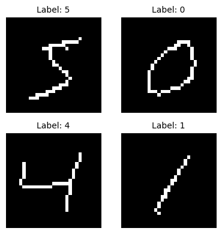

🚀 Training State Space Models with Linax¤
Welcome to your first notebook on State Space Models (SSMs)! 🎓
Our Goal: Take you from zero to hero 🦸 in SSMs through this hands-on learning journey. By the end of these notebooks, you'll have a deep understanding of SSMs and how to train them effectively using Linax.
Let's dive in! 💪
This notebook demonstrates how to train an SSM (State Space Model) on the MNIST SEQUENCE dataset using JAX, Equinox and Linax.
In this notebook we will train a LinOSS [2] (Linear Oscillatory State-Space) model.
About Linax¤
Linax is a library for state-space sequence modeling built on JAX and Equinox. It provides:
- 🚀 Modern SSM architectures: LRU, LinOSS and other state-of-the-art models
- ⚡ JAX-native: Full JIT compilation and automatic differentiation
- 🎯 Clean API: Built on Equinox for elegant, PyTorch-like model definitions
Key Features:¤
- Linax - The SSM library (main focus!)
- JAX - For automatic differentiation and JIT compilation
- Equinox - For elegant neural network modeling
What is LinOSS? 🧬¤
LinOSS (Linear Oscillatory State-Space) is a state-space sequence model based on forced harmonic oscillators. Inspired by cortical dynamics of biological neural networks, LinOSS models sequences using a system of forced linear second-order ODEs (ordinary differential equations). This oscillatory approach enables:
- Stable long-range modeling: Produces stable dynamics with only nonnegative diagonal state matrices
- Efficient computation: Uses fast associative parallel scans for training and inference
- Universal approximation: Can approximate any continuous causal operator mapping between time-series
- Long-horizon forecasting: Maintains accuracy over very long sequences (tested up to 50k timesteps)
About the dataset ✍️¤
In this example, we use the MNIST Sequence dataset, where handwritten digits are represented as sequences of pen strokes. Each timestep contains 4 features:
- dx, dy: Pen movement offsets (relative displacement from previous position)
- eos (end-of-stroke): Binary flag indicating when the pen lifts off (value = 1)
- eod (end-of-digit): Binary flag indicating the end of the digit sequence (value = 1)
This encoding captures the temporal dynamics of how each digit was drawn, treating handwriting as a sequential process rather than a static image.
Imports¤
We use: - Linax - Our SSM library providing the core building blocks - JAX/Equinox - Foundation libraries for the model definition and training loop - PyTorch - For efficient data loading via DataLoader (converted to NumPy for JAX) - Optax - For optimization algorithms (AdamW) - jaxtyping - For type annotations with array shapes
import equinox as eqx
import jax
import jax.numpy as jnp
import optax
import torch
from datasets import MNISTSeq
from jaxtyping import Array, Float, Int, PRNGKeyArray, PyTree
from tqdm import tqdm
from linax.encoder import LinearEncoderConfig
from linax.heads.classification import ClassificationHeadConfig
from linax.models.linoss import LinOSSConfig
from linax.models.ssm import SSM
Hyperparameters¤
We define our training configuration. These values have been chosen for effective training:
- Batch Size: 32 samples per batch (good balance between speed and stability)
- Learning Rate: \(3 \times 10^{-4}\) is a good default for AdamW
- Steps: 7500 steps for full training (approximately 5 epochs)
- Print Every: Evaluate every 1500 steps (approximately every epoch)
- Num Blocks: 10 LinOSS blocks for the model architecture
# Training configuration
# With these parameters the training time is around 17 minutes.
BATCH_SIZE = 32 # Number of samples per batch
LEARNING_RATE = 3e-4 # AdamW learning rate
STEPS = 7500 # Total training steps.
PRINT_EVERY = 1500 # Evaluation frequency.
SEED = 5678 # Random seed for reproducibility
NUM_BLOCKS = 10 # Number of LinOSS blocks
key = jax.random.PRNGKey(SEED)
⚡ Speed Up Training for Testing:
To reduce training time for experimentation: - STEPS = 3000 (2 epochs) - NUM_BLOCKS = 4
With these parameters, training takes around 2 minutes.
⚠️ Common Mistake: Using PRINT_EVERY=1 slows down training significantly because data must be transferred between the accelerator and host device frequently.
For optimal performance, refer to the JAX Training Cookbook.
Data Loading 📊¤
We load the MNIST Sequence dataset where handwritten digits are represented as sequences of pen strokes.
Dataset Details:¤
- Sequences: Each sample is 128 timesteps long
- Features: 4 features per timestep
dx, dy: Pen movement offsets (relative displacement)eos: End-of-stroke marker (pen lift)eod: End-of-digit marker (sequence end)- Labels: Digit class (0-9)
Preprocessing:¤
The MNISTSeq dataset automatically:
1. Downloads the data from the official source
2. Pads/truncates sequences to fixed length (128)
3. Returns PyTorch tensors (which we convert to NumPy for JAX)
# Load MNIST Sequence dataset
train_dataset = MNISTSeq(root="../../data_dir", train=True, download=True)
test_dataset = MNISTSeq(root="../../data_dir", train=False, download=True)
# Create DataLoaders for efficient batching
trainloader = torch.utils.data.DataLoader(train_dataset, batch_size=BATCH_SIZE, shuffle=True)
testloader = torch.utils.data.DataLoader(test_dataset, batch_size=BATCH_SIZE, shuffle=False)
Inspecting the Data 🔍¤
Let's verify our data shapes and examine a sample batch to ensure everything is loaded correctly.
Expected shapes:
- x: (batch_size, 128, 4) - sequences of pen strokes with 4 features per timestep
- y: (batch_size,) - class labels (digits 0-9)
# Get a sample batch to verify shapes
dummy_x, dummy_y = next(iter(trainloader))
dummy_x = dummy_x.numpy()
dummy_y = dummy_y.numpy()
print(f"Input shape: {dummy_x.shape}") # (batch_size, 128, 4)
print(f"Label shape: {dummy_y.shape}") # (batch_size,)
print(f"Sample labels: {dummy_y}") # Example digit labels
Input shape: (32, 128, 4)
Label shape: (32,)
Sample labels: [7 2 2 4 2 9 7 1 6 3 2 2 9 1 3 4 7 3 1 0 2 1 3 2 7 1 0 7 1 4 0 2]
Visualizing MNIST Sequences 👀¤
Let's visualize some samples from the training set to see what our model will be learning from. Each visualization shows how the pen strokes form the digit:
train_dataset.plot_samples(num_samples=4, figsize=(4, 4))

Model Architecture 🏗️¤
We'll build a LinOSS model using Linax's configuration system. The model consists of three main components:
- Encoder: Transforms input sequences (4 features) to a higher-dimensional space (64 features)
- SSM Blocks: Stacked LinOSS blocks that process the sequences using oscillatory dynamics
- Classification Head: Maps the final representation to class probabilities (10 digits)
Configuration Parameters:¤
num_blocks: Number of stacked LinOSS layers (configurable viaNUM_BLOCKS)encoder_config: Defines the input projection (4 → 64 dimensions)head_config: Defines the output layer (64 → 10 classes)
linoss_cfg = LinOSSConfig(
num_blocks=NUM_BLOCKS,
encoder_config=LinearEncoderConfig(in_features=4, out_features=64),
head_config=ClassificationHeadConfig(out_features=10),
)
key, subkey = jax.random.split(key, 2)
model = linoss_cfg.build(key=subkey)
state = eqx.nn.State(model=model)
Model Summary 📋¤
Let's inspect the model to see its architecture and parameter count.
What to look for:
- Total parameters (scales with NUM_BLOCKS - lightweight for sequence modeling!)
- Each block has ~25K parameters
- IMEX discretization scheme for numerical stability
- Dropout rate of 0.1 for regularization
- With NUM_BLOCKS=10, total is ~250K parameters
print(model)
╔════════════════════════════════════════════════════════════════════════╗
║ SSM Model Summary ║
╠════════════════════════════════════════════════════════════════════════╣
║ Components: ║
║ Encoder: LinearEncoder (256 params) ║
║ Blocks: 10× LinOSSBlock (total 250,880 params) ║
║ [0] 25,088 params | IMEX | damp:✓ | GLU(64→64) | drop:0.10 ║
║ [1] 25,088 params | IMEX | damp:✓ | GLU(64→64) | drop:0.10 ║
║ [2] 25,088 params | IMEX | damp:✓ | GLU(64→64) | drop:0.10 ║
║ [3] 25,088 params | IMEX | damp:✓ | GLU(64→64) | drop:0.10 ║
║ [4] 25,088 params | IMEX | damp:✓ | GLU(64→64) | drop:0.10 ║
║ [5] 25,088 params | IMEX | damp:✓ | GLU(64→64) | drop:0.10 ║
║ [6] 25,088 params | IMEX | damp:✓ | GLU(64→64) | drop:0.10 ║
║ [7] 25,088 params | IMEX | damp:✓ | GLU(64→64) | drop:0.10 ║
║ [8] 25,088 params | IMEX | damp:✓ | GLU(64→64) | drop:0.10 ║
║ [9] 25,088 params | IMEX | damp:✓ | GLU(64→64) | drop:0.10 ║
║ Head: ClassificationHead (650 params) ║
╠════════════════════════════════════════════════════════════════════════╣
║ Total Parameters: 251,786 ║
╚════════════════════════════════════════════════════════════════════════╝
Loss Function 📉¤
We use cross-entropy loss for multi-class classification, measuring how well the model's predicted probability distribution matches the true labels.
Implementation Details:¤
- Batched computation:
jax.vmapprocesses all samples in parallel for efficiency - Stateful forward pass: Model state (e.g., batch norm statistics) is threaded through computation
- Axis naming:
axis_name="batch"enables collective operations across the batch dimension - Returns: Both the loss value and updated model state (required for stateful layers)
Expected initial loss: ~2.3 (log(10)), which corresponds to random guessing among 10 classes.
def loss(
model: SSM,
x: Float[Array, "batch 128 4"],
y: Int[Array, " batch"],
state: eqx.nn.State,
key: PRNGKeyArray,
) -> Float[Array, ""]:
"""Apply loss function to the model.
Returns the cross entropy loss given x and y as well as the updated model state.
"""
batch_keys = jax.random.split(key, x.shape[0])
# this vmap parallelizes the model over the batch dimension (which is the first dimension).
pred_y, model_state = jax.vmap(
model,
axis_name="batch",
in_axes=(0, None, 0),
out_axes=(0, None),
)(x, state, batch_keys)
return cross_entropy(y, pred_y), model_state
def cross_entropy(y: Int[Array, " batch"], pred_y: Float[Array, "batch 10"]) -> Float[Array, ""]:
"""Cross entropy loss function."""
pred_y = jnp.take_along_axis(pred_y, jnp.expand_dims(y, 1), axis=1)
return -jnp.mean(pred_y)
# Test the loss function on our sample batch
loss_value, _ = loss(model, dummy_x, dummy_y, state, key)
print(f"Loss shape: {loss_value.shape}") # Should be scalar ()
print(f"Initial loss value: {loss_value:.4f}")
# Should be around log(10) ≈ 2.3 for random predictions
Loss shape: ()
Initial loss value: 2.3367
Testing Gradient Computation ✅¤
Before training, let's verify that gradients flow correctly through the model. We use eqx.filter_value_and_grad with has_aux=True to compute gradients while also getting the updated model state.
Note: You may see a ComplexWarning - this is expected! LinOSS uses complex-valued internal representations that are converted to real values during backpropagation.
(loss_value, new_state), grads = eqx.filter_value_and_grad(loss, has_aux=True)(
model, dummy_x, dummy_y, state, key
)
/Users/shox/dev/phd/ssm_dir/linax/.venv/lib/python3.12/site-packages/jax/_src/lax/lax.py:5473: ComplexWarning: Casting complex values to real discards the imaginary part
x_bar = _convert_element_type(x_bar, x.aval.dtype, x.aval.weak_type)
print(f"Loss after gradient computation: {loss_value:.4f}")
Loss after gradient computation: 2.3367
Evaluation Metrics 📊¤
In addition to loss, we track classification accuracy to better understand model performance.
JIT Compilation ⚡:¤
Both loss and accuracy functions are wrapped with @eqx.filter_jit for maximum performance:
- Compiles Python/JAX code to optimized XLA machine code
- First call is slow (compilation), subsequent calls are very fast
- Typical speedup: 10-100x faster than eager execution
loss = eqx.filter_jit(loss) # JIT our loss function from earlier!
@eqx.filter_jit
def compute_accuracy(
model: SSM,
x: Float[Array, "batch 128 4"],
y: Int[Array, " batch"],
state: eqx.nn.State,
key: PRNGKeyArray,
) -> Float[Array, ""]:
"""Computes the average accuracy on a batch."""
batch_keys = jax.random.split(key, x.shape[0])
pred_y, _ = jax.vmap(
model,
axis_name="batch",
in_axes=(0, None, 0),
out_axes=(0, None),
)(x, state, batch_keys)
pred_y = jnp.argmax(pred_y, axis=1)
return jnp.mean(y == pred_y)
Test Set Evaluation 🧪¤
This function evaluates the model on the entire test set by iterating through all test batches.
Inference Mode: We use eqx.tree_inference(model, value=True) to switch to inference mode:
- ✓ Disables dropout (we want deterministic predictions)
- ✓ Uses running statistics for batch normalization (instead of batch statistics)
- ✓ Ensures fair comparison between training and test performance
def evaluate(
model: SSM,
testloader: torch.utils.data.DataLoader,
state: eqx.nn.State,
key: PRNGKeyArray,
):
"""Evaluates the model on the test dataset."""
inference_model = eqx.tree_inference(model, value=True)
avg_loss = 0
avg_acc = 0
for x, y in tqdm(testloader, desc="Evaluating"):
x = x.numpy()
y = y.numpy()
# Note that all the JAX operations happen inside `loss` and `compute_accuracy`,
# and both have JIT wrappers, so this is fast.
avg_loss += loss(inference_model, x, y, state, key)[0]
avg_acc += compute_accuracy(inference_model, x, y, state, key)
return avg_loss / len(testloader), avg_acc / len(testloader)
Optimizer Setup ⚙️¤
We use the AdamW optimizer from Optax, which is Adam with decoupled weight decay regularization.
Why AdamW? - Better generalization than standard Adam - Separates weight decay from gradient-based updates - Well-suited for training SSMs with relatively few parameters - Learning rate of \(3 \times 10^{-4}\) is a good default starting point
optim = optax.adamw(LEARNING_RATE)
Training Loop 🏋️¤
Now let's train the model! The training process follows these steps:
- Initialize optimizer state with the model's trainable parameters
- Define a single training step (
make_step) that: - Computes loss and gradients via
eqx.filter_value_and_grad - Updates parameters using the optimizer
- Returns updated model, optimizer state, loss, and model state
- JIT-compile the training step for maximum performance
- Iterate over training data for the specified number of steps
- Evaluate periodically on the test set to monitor progress
Performance Optimization ⚡:¤
The entire training step is wrapped in a single JIT region, ensuring:
- Minimal Python overhead
- Fused operations for efficiency
- Maximum GPU/TPU utilization
Expected Results 🎯:¤
With the default configuration (BATCH_SIZE=32, NUM_BLOCKS=10, STEPS=7500):
- Initial accuracy: ~10-12% (random guessing among 10 classes)
- After 1500 steps (~1 epoch): ~91% accuracy
- After 3000 steps (~2 epochs): ~94% accuracy
- After 7500 steps (~5 epochs): ~96% accuracy
Training takes approximately 17 minutes with these settings.
Time to train! ☕
def train(
model: SSM,
trainloader: torch.utils.data.DataLoader,
testloader: torch.utils.data.DataLoader,
optim: optax.GradientTransformation,
steps: int,
print_every: int,
state: eqx.nn.State,
key: PRNGKeyArray,
) -> SSM:
"""Trains the model on the training dataset."""
# Just like earlier: It only makes sense to train the arrays in our model,
# so filter out everything else.
opt_state = optim.init(eqx.filter(model, eqx.is_inexact_array))
# Always wrap everything -- computing gradients, running the optimizer, updating
# the model -- into a single JIT region. This ensures things run as fast as
# possible.
@eqx.filter_jit
def make_step(
model: SSM,
opt_state: PyTree,
x: Float[Array, "batch 128 4"],
y: Int[Array, " batch"],
state: eqx.nn.State,
key: PRNGKeyArray,
):
(loss_value, new_state), grads = eqx.filter_value_and_grad(loss, has_aux=True)(
model, x, y, state, key
)
updates, opt_state = optim.update(
grads, opt_state, eqx.filter(model, eqx.is_inexact_array)
)
model = eqx.apply_updates(model, updates)
return model, opt_state, loss_value, new_state
# Loop over our training dataset as many times as we need.
def infinite_trainloader():
while True:
yield from trainloader
key, train_key = jax.random.split(key, 2)
for step, (x, y) in zip(tqdm(range(steps)), infinite_trainloader()):
# PyTorch dataloaders give PyTorch tensors by default,
# so convert them to NumPy arrays.
x = x.numpy()
y = y.numpy()
model, opt_state, train_loss, new_state = make_step(
model, opt_state, x, y, state, train_key
)
if (step % print_every) == 0 or (step == steps - 1):
test_loss, test_accuracy = evaluate(model, testloader, new_state, key)
print(
f"{step=}, train_loss={train_loss.item()}, "
f"test_loss={test_loss.item()}, test_accuracy={test_accuracy.item()}"
)
return model
model = train(model, trainloader, testloader, optim, STEPS, PRINT_EVERY, state, key)
Evaluating: 100%|██████████| 313/313 [00:24<00:00, 12.73it/s]
0%| | 2/7500 [00:33<28:29:19, 13.68s/it]
step=0, train_loss=2.368354082107544, test_loss=2.3261163234710693, test_accuracy=0.1006389781832695
Evaluating: 100%|██████████| 313/313 [00:14<00:00, 21.26it/s]
20%|██ | 1502/7500 [04:00<5:22:17, 3.22s/it]
step=1500, train_loss=0.6817602515220642, test_loss=0.3043871223926544, test_accuracy=0.9091453552246094
Evaluating: 100%|██████████| 313/313 [00:16<00:00, 19.48it/s]
40%|████ | 3002/7500 [07:31<4:24:02, 3.52s/it]
step=3000, train_loss=0.12930883467197418, test_loss=0.1924053579568863, test_accuracy=0.9401956796646118
Evaluating: 100%|██████████| 313/313 [00:14<00:00, 21.57it/s]
60%|██████ | 4502/7500 [10:57<2:38:41, 3.18s/it]
step=4500, train_loss=0.5353334546089172, test_loss=0.17053061723709106, test_accuracy=0.9477835297584534
Evaluating: 100%|██████████| 313/313 [00:14<00:00, 21.48it/s]
80%|████████ | 6002/7500 [14:25<1:19:45, 3.19s/it]
step=6000, train_loss=0.2455877959728241, test_loss=0.13679201900959015, test_accuracy=0.9574680328369141
Evaluating: 100%|██████████| 313/313 [00:14<00:00, 21.52it/s]
100%|██████████| 7500/7500 [17:52<00:00, 6.99it/s]
step=7499, train_loss=0.2593978941440582, test_loss=0.15777377784252167, test_accuracy=0.9515774846076965
🎉 Congratulations!¤
You've completed the first step on your journey from beginner to hero! 🦸
In this notebook, you learned how to: - ✅ Load and visualize sequential data (MNIST Sequence dataset) - ✅ Configure and build a LinOSS model using Linax - ✅ Set up training with JAX, Equinox, and Optax - ✅ Train a state space model and monitor its performance
What's Next? 🚀
Continue your hero route by exploring the next notebooks, where you'll dive deeper into: - SSM for regression problems - Advanced SSM architectures (LRU, S4, S5) - Configurable SSM architectures
Keep going - you're on your way to mastering State Space Models! 💪
References¤
- Linax GitHub Repository: https://github.com/camail-official/linax (⭐ Star the repo!)
- LinOSS Paper: Rusch, T. K., & Rus, D. (2024). "Oscillatory State-Space Models". arXiv preprint arXiv:2410.03943. https://arxiv.org/abs/2410.03943
- Equinox Documentation: https://docs.kidger.site/equinox/
- JAX Documentation: https://jax.readthedocs.io/
- MNIST SEQUENCE Dataset: https://edwin-de-jong.github.io/blog/mnist-sequence-data/